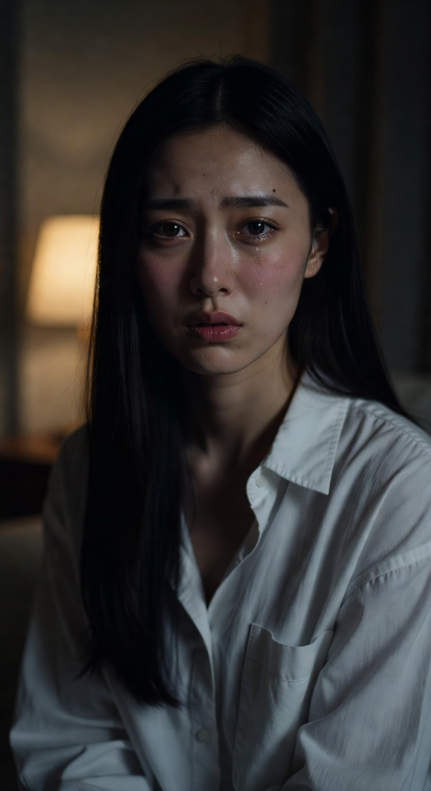

CONTENT IDEA DESIGN — 2026
TIKTOK CONTENT DESIGN
昼は球場でプロの声を張る。
夜はベッドで一人で練習してる。
真面目な声 × ビジュアルのセクシーさ。
このギャップをコンテンツの核に据え、
TikTokで伸ばす。
深夜、ベッドで一人、発声練習してる。
画角・距離・ライティング3パターン — TikTok縦型イメージ
「昼の顔」と「夜の顔」の両方が見えることが大事。
この二面性がファンを作り、フォローを生む。
DAYTIME — 昼の顔
プロのウグイス嬢
野球場で毎日声を張る、真面目な仕事人。
選手名コール、試合実況、場内アナウンス。
清潔感があって、プロとしての矜持がある。
→ この文脈をTikTokに匂わせ続ける
NIGHTTIME — 夜の顔（裏アカ）
深夜のベッドで一人
このアカウントだけが「本音の場所」。
部屋着で、薄暗い部屋で、誰にも見せない声が漏れる。
顔は映さない。でも全部伝わる。
→ このギャップがバズを生む
視聴者が感じること：
「昼はあんなに真面目なのに、夜はこんな顔してるんだ。」
この2軸の掛け合わせが、他のASMR・エロ系コンテンツと
完全に差別化できる唯一の理由。
AXIS A
真面目な声
ウグイス嬢という職業
プロの発声・アナウンス
真剣に練習している姿
台本は「仕事の延長」
AXIS B
ビジュアルのエロさ
深夜のベッドという場所
谷間が見える部屋着
顔は映さない（想像力）
無防備な素の空気感
なぜこのギャップが強いか
エロいだけのコンテンツは星の数ほどある。真面目なだけも無数にある。
「真面目な文脈の中にエロさが滲み出る」という体験は、
視聴者の脳に焼き付く。スクロールが止まり、保存され、シェアされる。
台本設計の原則
内容はあくまで真面目なウグイス嬢の発声練習として成立させる。
その中に、言葉の選び方・間の取り方・声のトーンで「エロさ」を忍ばせる。
直接的なエロを狙わない。滲み出させるのが正解。
声と肌と、深夜だけの空気。
体勢・ライト・視線の角度 3パターン
月2〜3回、1回の撮影をじっくり時間をかけて行う。
たくさんストックして、澤田が様々なパターンで編集・投稿する。
事前に台本を複数パターン用意
澤田が5〜10本分の台本を事前に作成。
発声練習型・本音漏れ型・ASMR型など種類を揃えておく。
1回の撮影でたっぷり素材を確保
同じ台本でも角度・距離・トーンを変えて複数テイク撮影。
1セッションで30〜50クリップが目標。
画角バリエーション：後ろ姿 / 首から下バストショット / 手元・口元 / 斜め横
素材をストックして渡す
撮影データをLINEやドライブで共有。
さくらの仕事はここで終わり。
澤田がストックから様々なパターンで編集 → 投稿
1回の撮影素材から複数本のTikTokを切り出す。
編集・テロップ・BGM・投稿・CS・管理まで全部澤田担当。
撮影環境
場所：ベッドのある薄暗い部屋・間接照明推奨
衣装：谷間が見える部屋着（寝る前感）
顔：映さない。首から下 or 後ろ姿で統一
マイク：iPhoneの有線イヤホンマイクでOK（後で音質補正）
この部屋だけで、本音を話す。
表情・感情温度・リアリティ 3パターン

澤田が台本を作る際の設計ルール。
内容は真面目に、でもエロさが滲み出る構成にする。
型① 発声練習型（基本）
「今日の練習をしている」という体裁で進む。
「バッターボックスに入りましたのは——」から始め、
途中で素の独り言が漏れる構成。
▶ 声はプロ / 場所は深夜のベッド / 画は部屋着のビジュアル
型② 本音漏れ型
「球場では言えないこと」を深夜に一人でつぶやく。
4番選手への感情、声が震えた瞬間、試合前の緊張…
真面目な仕事の裏にある人間っぽさを出す。
▶ 内容は感情的 / 声はウグイス嬢口調のまま
型③ ASMR練習型
「明日の試合に向けて囁き練習」という設定。
ウグイス嬢のセリフを極限まで小さな声で繰り返す。
▶ プロの声 × 囁き × 深夜のベッド → 耳元に語りかける体験
セリフの後に2〜3秒の無音を入れる。この「間」が一番ドキドキさせる。
最後の一言だけ、急にウグイス嬢口調に戻す。このギャップで保存・フォローが起きる。
直接的なエロ表現は入れない。TikTokのBANリスクもあるし、ミステリアス感が壊れる。
さくらは撮影だけ。残りは全部澤田が回す。
| 媒体 | 頻度 | 月本数 | 目的 |
|---|---|---|---|
| TikTok | 週3本 | 月12本 | FYPで新規認知。1本バズれば一気に数千フォロワー |
| X（旧Twitter） | 週2本 | 月8本 | TikTok転載＋コメント返信でファン化・固定化 |
| Fanbox | 週1本 | 月4本 | 月額500〜1,000円の限定コンテンツで課金回収 |
月2〜3回の撮影のみ
台本を受け取って、ベッドで撮影して、データを送る。それだけ。
バックオフィス全担当
台本制作 / 撮影ディレクション / 編集 / テロップ / BGM
TikTok・X・Fanbox 投稿管理 / コメント・DM対応（CS）
売上管理・会計 / 戦略改善・PDCA
まず1回、撮りに行くだけでいい。
それだけでコンテンツが動き始める。